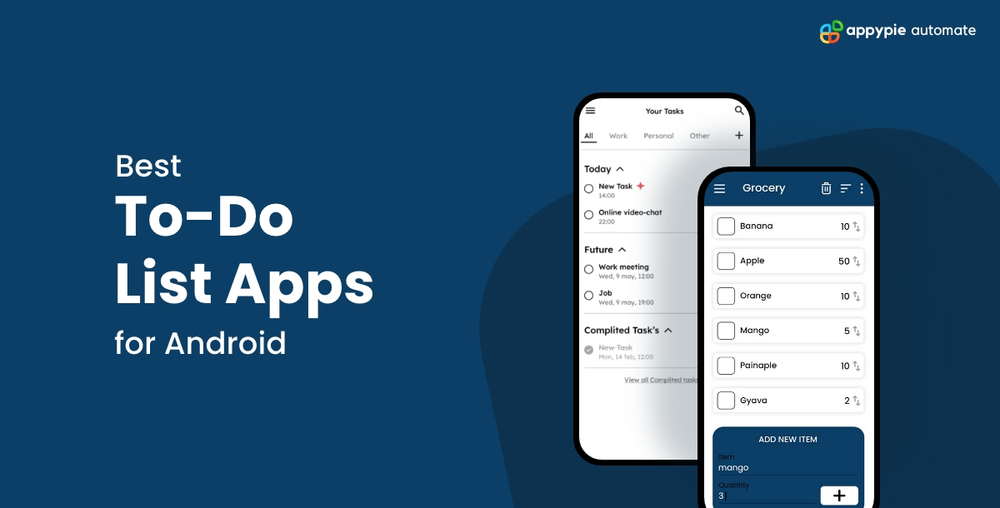
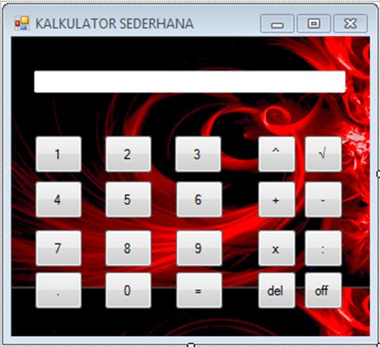

Saya adalah seorang Santri dan Mahasiswa Teknik Informatika Universitas Sultan Fatah Demak Jawa Tengah
Saya Lahir di Demak pada 22 Juni 1999
Alamat : Ds. Morodemak, kec. Bonang, Kab. Demak
Lihat Portfolio SayaSaya adalah seorang santri dan mahasiswa Teknik Informatika semester 5 di Universitas Sultan Fatah Demak yang bersemangat dan antusias dalam dunia pengembangan web dan mobile. Saya senang mempelajari teknologi baru dan menyelesaikan masalah melalui kode.
Saat ini, fokus saya adalah menguasai pemrograman perangkat mobile dan membangun aplikasi yang bermanfaat serta user-friendly.

Aplikasi manajemen tugas sederhana menggunakan Flutter.
Website responsif untuk UMKM lokal menggunakan HTML, CSS, dan JS.

Aplikasi kalkulator berbasis web dengan fungsionalitas dasar.
Silakan hubungi saya melalui email atau media sosial di bawah ini.